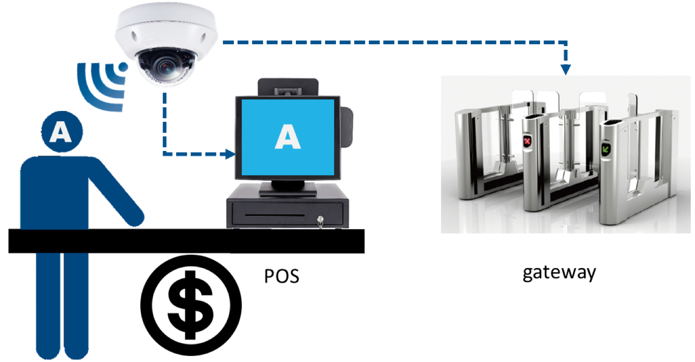

Andro Video
隨著人工智能的應用發展，國內越來越多企業願意將下一個世代的應用使用在企業內外部，帶給客戶不一樣的使用體驗與方便性。其中以人臉辨識最為大家廣為接受與使用。
人工智能場景, 主要由軟件、硬件、算法和數據所組成。奇卓的人工智能可以為每個場景（行業）提供具算法的強大硬體為行業加值，讓人工智能落地——這是與其他公司的核心差異化所在。
奇卓是一家結合軟硬體製造的終端智能攝影機IIOT公司，致力發展簡單好用的產品。其產品可以用在大樓，旅館，車站，捷運，辦公室，學校，工廠，銀行，家庭等地方。整套solution最大的優勢在於以最完整的型態提供軟硬體已經整合好的設備，隨裝隨用，相較於傳統的server-client架構，可以有效減少額外設備的採購與整合，另外也可以變相地讓資料不落地，以免機敏資料的外洩等。應用的情境包含出入控制、降低財損等可以有效利用臉辨功能，架設於所需區域，當可疑人士被偵測到時能及時通知管理人員，發揮觀察名單的特性，遠比傳統安控設備用回查的方式來的有效率，及時避免財損。
另外還可以廣泛應用在出入考勤、VIP/黑名單迎賓等，利用臉辨機有效的管理月薪與時薪員工到店上班的狀況。
聚達系統可以透過系統平台的整合，替企業客戶有效的設計使用情境與工具，讓強大的人工智能引擎套用在系統化的操作平台上，進而達到真正的人工智能應用。
2